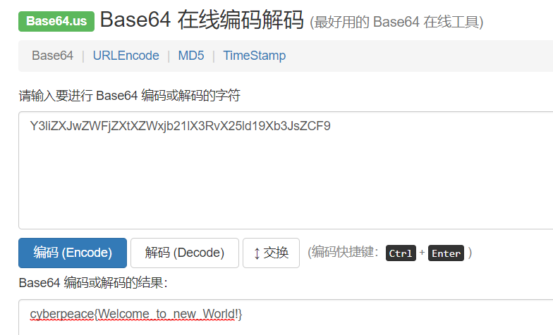
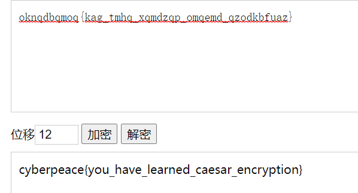
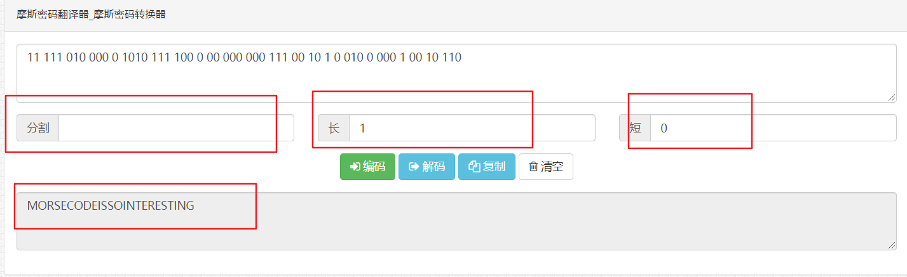
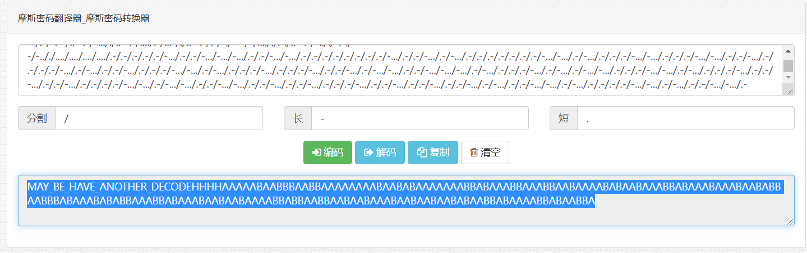
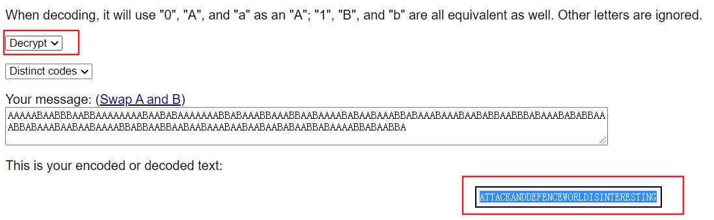
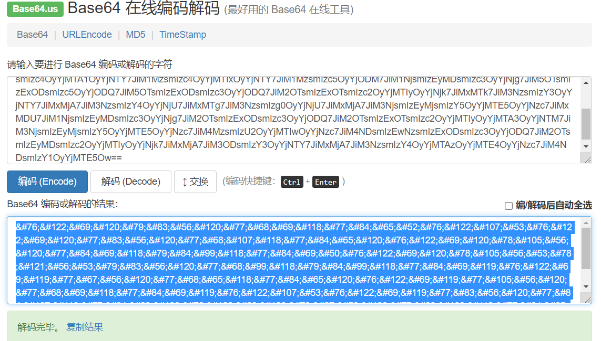
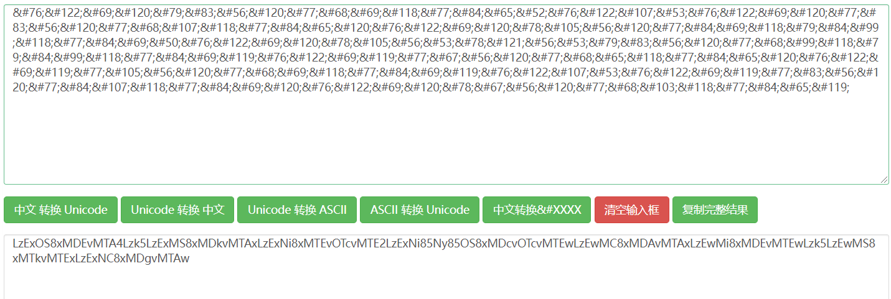
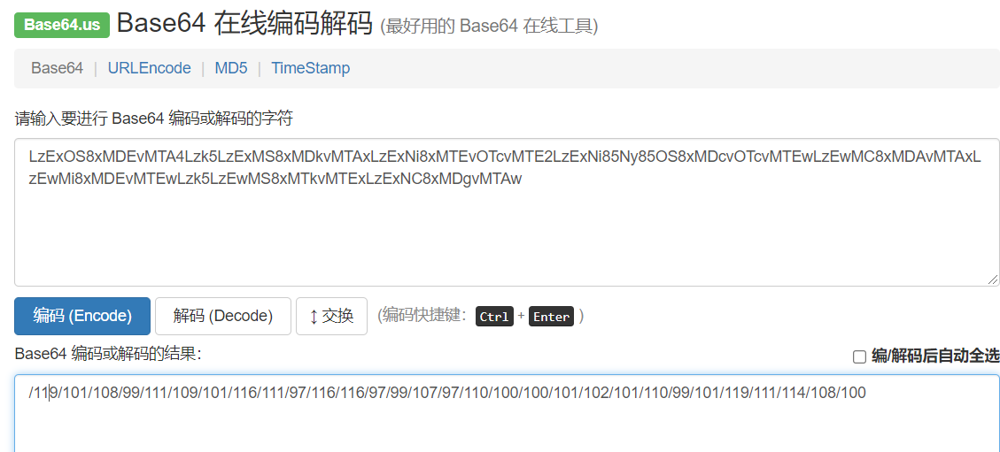
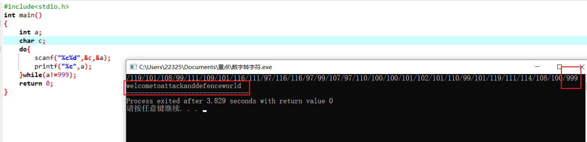
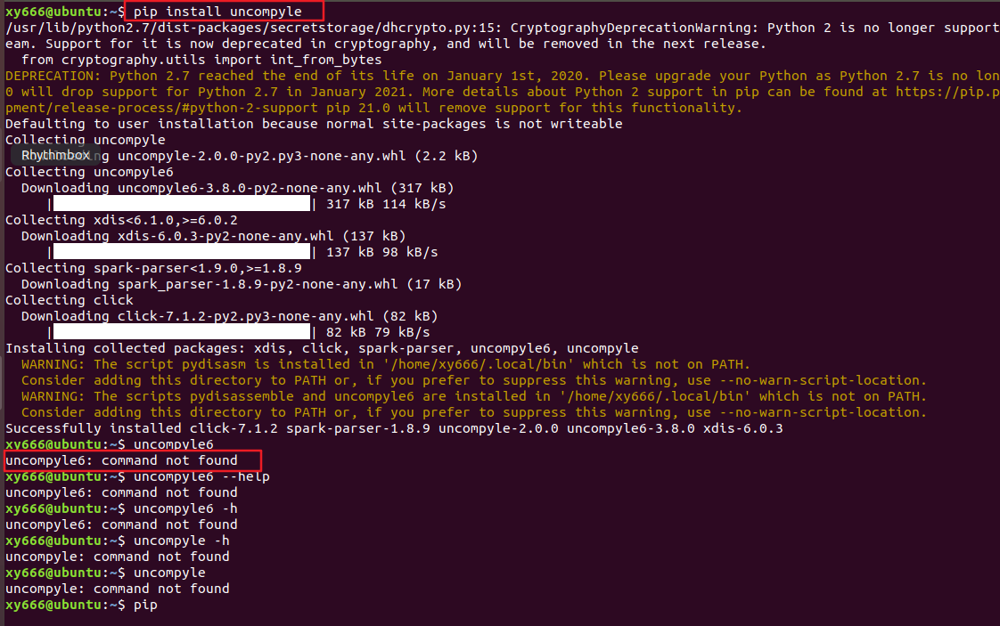

攻防世界-crypto
base64
base64编码
1 | 下载附件得到一串字符串，根据题目知由base64加密 |

Caesar
1 | 凯撒密码 |

推荐题解（python解法）：https://blog.csdn.net/LEIDAqix/article/details/103600710
Morse
摩斯密码
借助摩斯密码转换器：http://www.all-tool.cn/Tools/morse/
将题目附件的字符串粘贴至此处，以空格” “为分割，”1”为长信号，”0”为短信号
得到翻译结果：MORSECODEISSOINTERESTING
结合flag提交格式，得到flag
1 | flag：cyberpeace{morsecodeissointeresting} |

幂数加密
题解：攻防世界 | 幂数加密_Bravo！！！的博客-CSDN博客_攻防世界幂数加密
知道有这种方法即可
1 | flag:cyberpeace{WELLDONE} |
Railfence
栅栏密码
栅栏密码加解密(栏数5)：栅栏密码加密/解密【W型】 - 一个工具箱 - 好用的在线工具都在这里！ (atoolbox.net)
题解：
链接：Crypto入门 （七） Railfence （栏栅密码，正常型和W型） - 缘初 - 博客园 (cnblogs.com)
链接：https://blog.csdn.net/qq_43504939/article/details/98473847
W型分布：
1 | 1 c c e h g |
1 | flag:cyberpeace{railfence_cipher_gogogo} |
不仅仅是Morse
下载附件，摩斯码转换

看到一串AB字符组成的字符串
培根密码：Baconian Cipher (rumkin.com)

1 | flag:cyberpeace{attackanddefenceworldisinteresting} |
题解：https://blog.csdn.net/weixin_47982238/article/details/108569470
混合编码
1 | base解码->Unicode解码->base解码->写脚本得出flag |
base64解码器：Base64 在线编码解码 | Base64 加密解密 - Base64.us
unicode解码器：在线Unicode编码转换-Unicode和ASCII在线互转-中文转Unicode工具 (jsons.cn)
打开附件看到末尾带等号”=”，猜测是base64加密，拿去解密一下

“&#xx；”格式，拿去进行unicode解密

再来一次base64

简单写一个脚本进行转换

1 | flag:cyberpeace{welcometoattackanddefenceworld} |
相关知识：30余种加密编码类型的密文特征分析（建议收藏） - 云+社区 - 腾讯云 (tencent.com)
easy_RSA
题解：
链接（简）：https://blog.csdn.net/asd413850393/article/details/89810137
链接（工具）：https://blog.csdn.net/qq_43734081/article/details/90447548
链接（冗+全）：轻松学习RSA加密算法原理_q376420785的专栏-CSDN博客
链接（python）：https://blog.csdn.net/Catherine_qingzhu/article/details/106390145
1 | RSA的计算过程是(链接（简）)： |
1 | flag:cyberpeace{125631357777427553} |
工具下载（RSA-Tool 2 by tE!）：
链接：https://pan.baidu.com/s/1C5U22vxdQmdUzZsEn7BhXw?pwd=xxxy
提取码：xxxy
easychallenge
不知道为什么，我用不了uncompyle工具，密码学部分暂时到这吧，先去学点理论后再来实战

链接：python-uncompyle反编译_longgb123的博客-CSDN博客_uncompyle6反编译